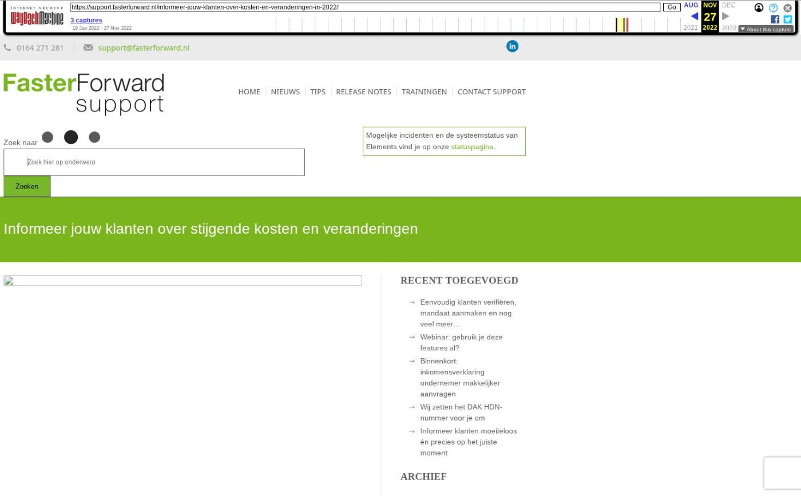

Informeer jouw klanten over stijgende kosten en veranderingen

Tekstinhoud
Title: Informeer jouw klanten over stijgende kosten en veranderingen - Faster Forward Support
URL: https://web.archive.org/web/20221127183534/https://support.fasterforward.nl/informeer-jouw-klanten-over-kosten-en-veranderingen-in-2022/
Source element: <article>
---
Photo by Jimmy Dean on Unsplash
"Kan ik mijn hypotheek op lange termijn blijven betalen?" Dat is een vraag die veel huiseigenaren zichzelf niet stellen. Daarom is het zeer belangrijk om je klanten te informeren over wijzigingen die begin 2022 zijn ingegaan. Deze wijzingen kunnen namelijk leiden tot hogere kosten en minder inkomsten.
Daarnaast kunnen er voor de klant altijd mogelijkheden zijn om te besparen op de lasten van zijn/haar hypotheek. Maar dit kan alleen als de klant hiervan op de hoogte is, of hij met zijn adviseur zijn financiën bespreekt.
Risico's voor jouw klanten
We hebben een aantal mogelijke risico's op een rijtje gezet.
Minder hypotheekrenteaftrek bij een bepaald inkomen
Meer belasting over eigen woning door afbouw Wet Hillen
Afname van koopkracht
Stijgende energieprijzen
Stijgende zorgpremies
Stijgende olie- en benzineprijzen
Toenemende inflatie
Krapte op de huizenmarkt
Stijgende WOZ waarden
Mogelijkheden met Elements
SMART
Gebruik SMART: selecties en acties om een specifieke klantgroep te filteren. Bijvoorbeeld met een hypotheek van een bepaalde looptijd of klanten met/zonder zorgverzekering. Vervolgens voer je een e-mailcampagne uit of maak je een beltaak aan voor bijvoorbeeld een bepaalde adviseur of de binnendienst.
Rapportages
Gebruik de rapportages in Elements om je portefeuille te doorlopen. Hier kan je ook persoonlijke selecties maken en e-mailcampagnes uitvoeren op je (persoonlijke) selectie.
Je kan ook een rapportage op maat laten maken door Faster Forward.
Voorbeelden:
CRM – Overzicht hypotheken (met datumfilters)
CRM – Personen met een hypotheekrentevervaldatum tussen nu en 8 (of 4) maanden
CRM – Verzekeringsportefeuille
Campagnemanager
Stuur een algemene nieuwsbrief naar je klanten met informatie. Zo ben je een attente adviseur en voldoe je gedeeltelijk aan je zorgplicht.
Ontdek de campagnemanager en bekijk de standaard e-mails die we beschikbaar hebben (op aanvraag)
Verder lezen
Koopkracht gaat dalen (NRC)
Mensen helpen, juist ook in slechte tijden (VVP)
Dit zijn de zorgpremies voor 2022 (AMweb)
Sterk stijgende energieprijzen: maatregelen en gevolgen (Rijksoverheid)
Eigenwoningforfait en WOZ-waardes in 2022 (Business Insider)
Geplaatst op 2 oktober 2022 (Laatste update: 03 november 2022)